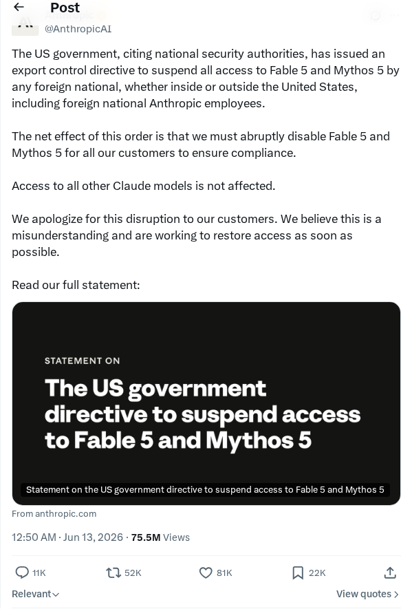
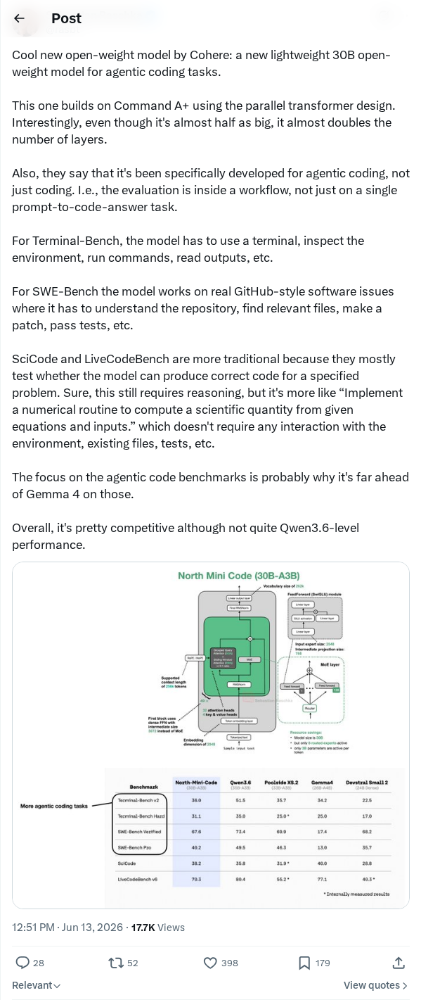
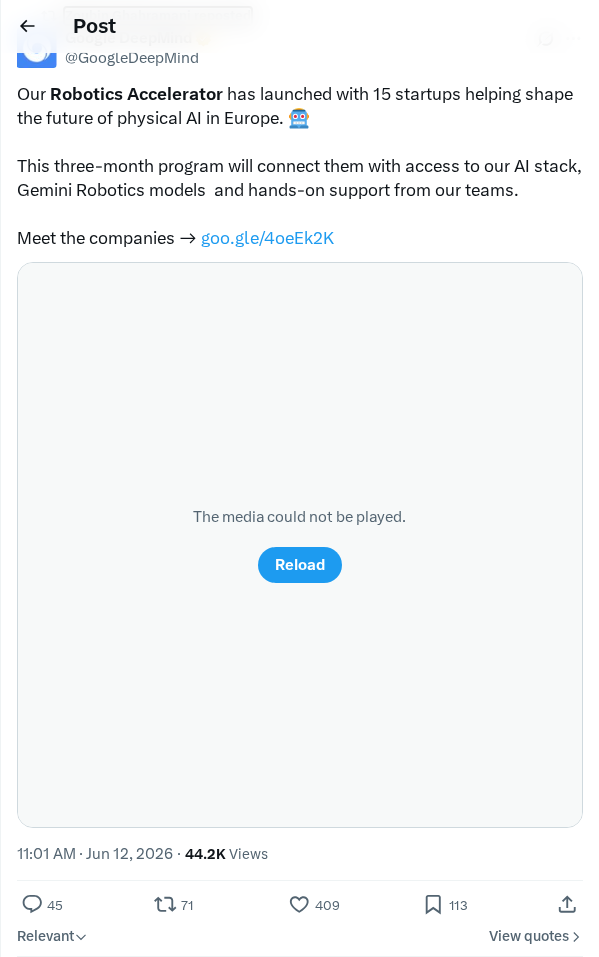
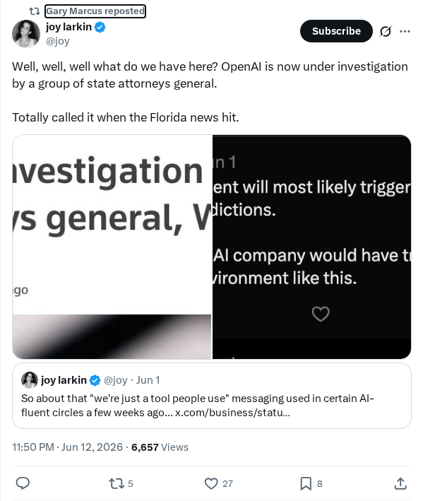
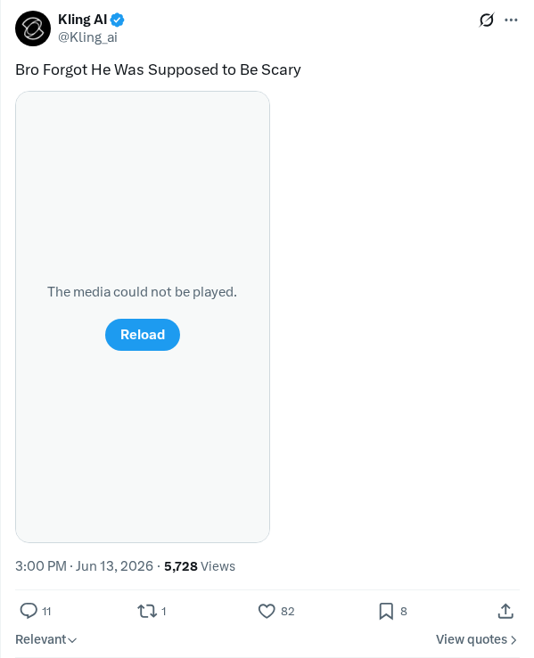
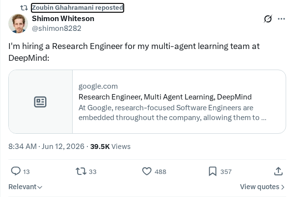

回应美国政府暂停访问 Fable 5 和 Mythos 5 的指令
Anthropic 对美国政府的出口管制指令作出正式回应，该指令要求立即暂停所有外国国民和客户对 Fable 5 和 Mythos 5 模型的访问。政府以防止潜在的安全绕过为由，Anthropic 则澄清称这些仅是狭义的、非通用的越狱行为，且其能力在其他模型中已广泛存在。此次地缘政治政策调整将国籍作为模型访问的硬性界限，凸显了欧洲对技术的依赖性。其他 Anthropic 模型的访问不受影响。
AI 前沿资讯、研究与趋势精选
Anthropic 对美国政府的出口管制指令作出正式回应，该指令要求立即暂停所有外国国民和客户对 Fable 5 和 Mythos 5 模型的访问。政府以防止潜在的安全绕过为由，Anthropic 则澄清称这些仅是狭义的、非通用的越狱行为，且其能力在其他模型中已广泛存在。此次地缘政治政策调整将国籍作为模型访问的硬性界限，凸显了欧洲对技术的依赖性。其他 Anthropic 模型的访问不受影响。
Andreessen Horowitz 合伙人 David Haber 概述了 AI 驱动的工作场所录音如何将对话音频转化为结构化的企业背景信息。现代 AI 系统利用这些录音学习企业文化和边缘案例，使自主 AI 智能体能够代替高管执行组织内的生产性任务。OpenAI 和 Bridgewater Associates 等公司正在采用此方法构建制度性语境。这种转变代表了一种围绕语音而非文字组织的新型企业软件类别，旨在提高个人生产力并为高管提供自上而下的协调监督。
Anthropic 发布官方声明，回应美国政府关于暂停访问其先进 AI 模型 Fable 5 和 Mythos 5 的指令。此次监管干预标志着政府对前沿生成式 AI 系统的监督力度显著升级，直接影响了开发者和企业用户。这一举措引发了业界关于数字边界、模型合规性以及技术发展中国家安全政策的广泛讨论。
据报道，亚马逊首席执行官与美国政府官员的会谈触发了针对 Anthropic Claude 系列 AI 模型的监管与安全调查。会谈重点关注潜在漏洞、知识产权主权以及针对高性能大语言模型的出口管制政策。此次干预突显了前沿 AI 实验室、云服务提供商与国家安全机构之间日益增长的地缘政治审查与紧张局势。
研究社区正式发布了 GLM 5.2，这是开源双语对话模型系列“通用语言模型”（General Language Model）的最新版本。此次更新针对推理速度、上下文理解及中英文对话能力进行了优化。作为行业领先基础模型的竞争者，它通过结构调整降低了计算延迟，同时保持了推理任务中的高精度。
一名独立开发者配置了一套 NVIDIA RTX 5080 和 RTX 3090 双 GPU 系统来运行 Qwen 3.6 27B 大语言模型。通过 8-bit 量化，该消费级系统实现了每秒 80 tokens 的本地推理速度。这证明了使用异构消费级硬件以高吞吐量运行高性能量化开源模型，而无需依赖企业级云资源的可行性。
开发者 Koen van Gilst 构建并发布了“Shepherd's Dog”，这是一款使用 Fable 开发的交互式网页游戏。Fable 是一套集成了 Anthropic Claude AI 助手的工具集。该项目展示了利用生成式 AI 和自主智能体进行快速游戏原型制作的可行性。通过解释自然语言提示来直接在浏览器中编排复杂的游戏逻辑、物理和渲染，该工具展示了数字媒体创作工作流的转变。
一位开源开发者发布了 Paca，这是一款基于 Go 语言构建的轻量级 Jira 替代方案，专为敏捷项目中的人机协作而设计。该平台将人类和 AI 智能体视为平等的团队成员，允许进行联合冲刺规划和任务分配。系统通过自定义视图和基于 WebAssembly (WASM) 的插件架构，实现了多语言模块化扩展，从而将智能体工作流直接集成到项目管理中。
开发者社区注意到，开源 AI 开发平台 TensorZero 突然将其主要的 GitHub 仓库归档。此举发生在该项目筹集 730 万美元种子轮融资之后。从活跃开源项目到归档状态的快速转变，引发了开发者对人工智能领域风险投资背景下的开源软件商业压力及长期生存能力的重大担忧。
开发者 Stephen Bochinski 概述了在不支付昂贵订阅费用的情况下，如何在家里运行 AI 辅助编程的高性价比工作流。该指南详细介绍了如何结合消费级硬件运行小型开源本地大语言模型，并辅以按需付费的 API 来处理复杂开发任务。通过优化本地 IDE 集成和模型选择，开发者可以减少经常性开支，同时保持响应迅速且可定制的编程环境。

美国政府发布正式出口管制指令，针对 Anthropic 的旗舰大语言模型 Fable 5 和 Mythos 5，理由是国家安全担忧。该指令禁止全球范围内的外国国民访问这些模型，包括 Anthropic 雇员，强制公司暂停对 Claude Fable 5 平台的常规访问。新用户会话将默认转为 Opus 4.8 框架。此次合规行动标志着政府对前沿 AI 实验室的监督和运营约束发生了重大转变。

Cohere 发布了一款专为智能体编程（agentic coding）设计的轻量级开源权重模型。该模型基于 Command A+ 架构，拥有 300 亿参数，并采用了并行 Transformer 设计。尽管参数量约为大型版本的一半，但该模型通过增加层密度来优化性能，从而提升了复杂开发者工作流和自主编程助手的表现。

Google DeepMind 在欧洲启动了一个机器人加速器计划，支持 15 家从事物理 AI 和具身系统的初创公司。加速器将提供资源和协作支持，旨在将先进的机器学习模型集成到机器人软件中，解决现实世界的工业挑战并推动欧洲硬件创新。

一个由州司法部长组成的联盟对 OpenAI 的实践、安全和运营问责制发起联合正式调查。此举升级了法律和政府对该公司生成式 AI 系统的监管。这一监管行动反映了针对基础大语言模型部署和风险管理开展州级调查的上升趋势。

Kling AI 发布了一段其生成式视频合成模型的演示视频，突出了在角色动画和物理一致性方面的进展。演示展示了该模型在渲染自然表情和在动态帧序列中保持结构连贯性的能力，旨在改善数字媒体和电影制作的输出质量。

Google DeepMind 开启了研究工程师的招聘，加入其多智能体学习部门。该工程师将专注于在多智能体强化学习架构内开发复杂的协调、社会学习和战略推理系统，以提高自主智能体在共享虚拟环境中的协作和决策能力。